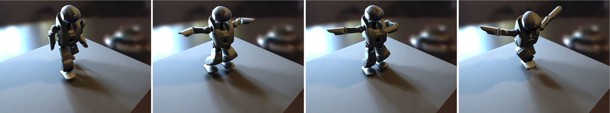

Real-time, All-frequency Shadows in Dynamic Scenes
Thomas Annen1, Zhao Dong1*, Tom Mertens2, Philippe Bekaert2, Hans-Peter Seidel1, Jan Kautz3
1MPI Informatik, Germany 2Hasselt University, tUL-IBBT, EDM, Belgium 3University College London, UK
*The first two authors are sorted by the alphabetic order of their last names.

Figure 1: A fully dynamic animation of a dancing robot under environment map lighting rendered at 29.4 fps without any precomputation.
Incident radiance is approximated by 30 area light sources (256x256 shadow map resolution each).
Introduction
Real-time, photo-realistic rendering of computer-generated scenes requires a high computational effort. One of the main bottlenecks is visibility determination between light sources and receiving surfaces, especially under complex lighting such as area light sources or environment maps.
The goal of our work is to enable real-time, all-frequency shadows in completely dynamic scenes and to support area light sources as well as environment lighting. The key contribution is a very fast method for rendering plausible soft shadows. It requires only a constant-time memory lookup, thereby enabling us to render soft shadows at hundreds of frames per second for a single area source. Environment-lit scenes can be rendered from a collection of approximating area light sources. Even though shadows are only approximate, the results are virtually indistinguishable from reference renderings, but are produced at real-time frame rates.
Paper Abstract
Shadow computation in dynamic scenes under complex illumination is a challenging problem. Methods based on precomputation provide accurate, real-time solutions, but are hard to extend to dynamic scenes. Specialized approaches for soft shadows can deal with dynamic objects but are not fast enough to handle more than one light source. In this paper, we present a technique for rendering dynamic objects under arbitrary environment illumination, which does not require any precomputation. The key ingredient is a fast, approximate technique for computing soft shadows, which achieves several hundred frames per second for a single light source. This allows for approximating environment illumination with a sparse collection of area light sources and yields real-time frame rates.
Materials for Download
- Paper (8MB), to appear in SIGGRAPH 2008.
- Final video (DivX Codec, 23MB).
- You can check out the video from Youtube.
Bibtex
@Article{ADM08:2008:CSSM,
author = {Annen, Thomas and Dong, Zhao and Mertens, Tom and Bekaert, Philippe and Seidel, Hans-Peter and Kautz, Jan},
title = {Real-time, all-frequency shadows in dynamic scenes},
journal = {ACM Trans. Graph.},
volume = {27},
number = {3},
year = {2008},
pages = {1--8},
publisher = {ACM},
}
Acknowledgements
We thank Kun Xu and the Graphics and Geometric Computing Group at Tsinghua University for providing the robot 3D animation sequence, Michael Schwarz for the bitmask- and backprojection soft shadow demo, and Thomas Luft for providing the leaf model from Figure 12. Thanks to Paul Debevec for his light probes (http://www.debevec.org) and to the Stanford University Computer Graphics Laboratory for the happy Buddha model. The model from Figure 8 was Generated by 'Sculpture Generator 1' by Carlo H. Séquin, UC Berkeley. Part of the research at EDM is funded by the European Regional Development Fund and the Flemish government, and part of the research at UCL is funded by EPSRC (grant EP/E047343/1).